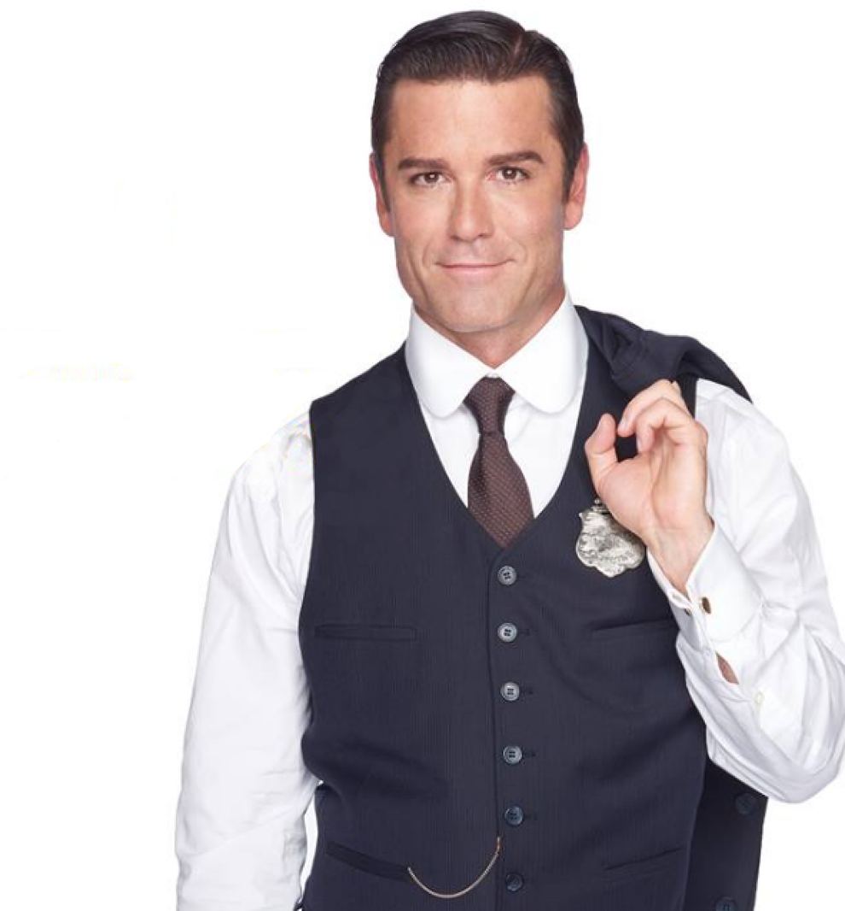
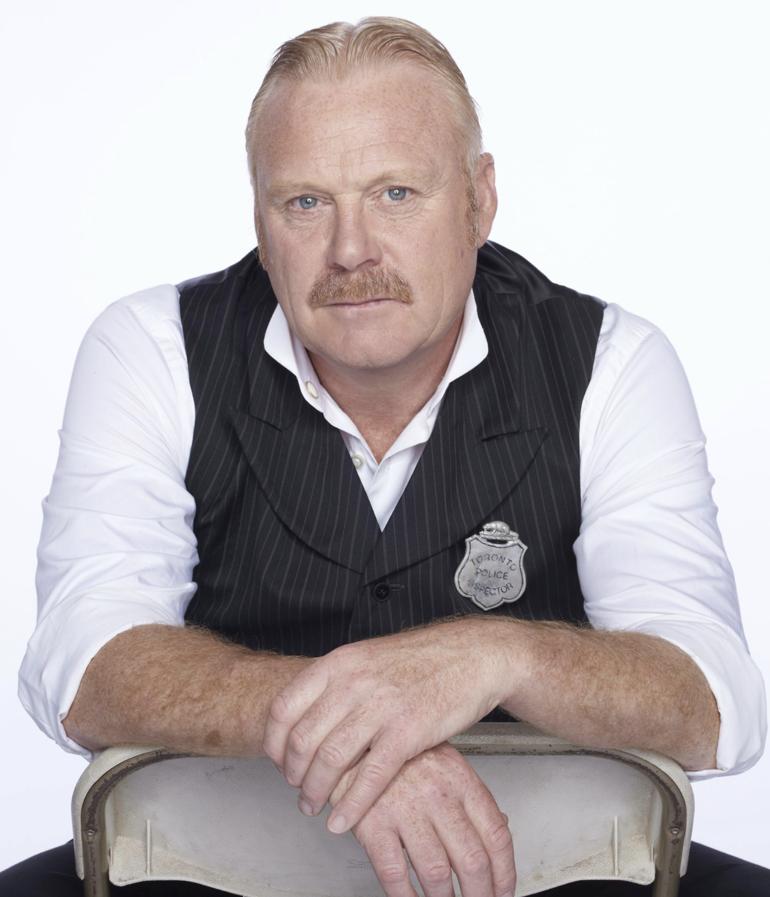
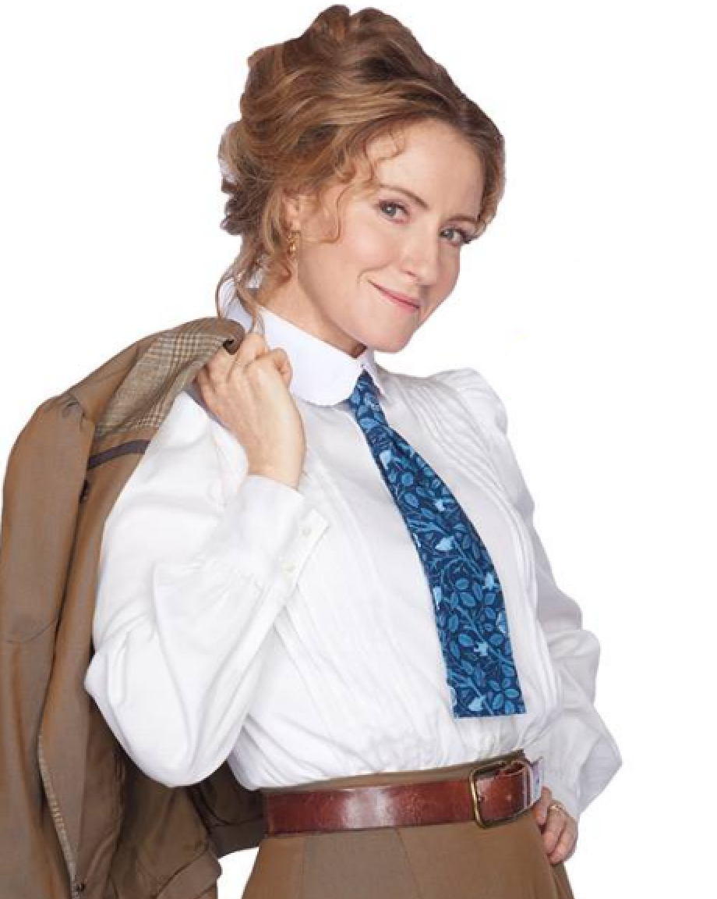

Main Characters
Detective William Henry Murdoch

Although very logical, sceptical, observant, scientific and clear-headed with a photographic memory (possibly Hyperthymesia) and working memory, these become an issue when he needs to connect with people on an emotional level, something he finds difficult. Often his unusual techniques and unbiased opinions of people lead him to clash with Brackenreid (even though they work together well). He is also a polymath.
Inspector Thomas Charles Brackenreid

Inspector Brackenreid, who is portrayed by Colm Meaney in the TV movies and in the TV series by Thomas Craig,[3] is a middle-aged married man, fond of the theatre and a good drink. He is the head of the stationhouse and does most of the interrogating, often forming opinions of a suspect because of personal impressions or their social standing. Quick to anger and tenacious, with a sarcastic sense of humour, he is better at traditional "coppering" and is very proud of his job and what he feels is his duty to protect the city.
Dr. Julia Ogden
Doctor Ogden, who is portrayed by Keeley Hawes in the TV movies and by Hélène Joy[4] in the TV series, attended Bishop's University and is a skilled pathologist and medical examiner. (In 1894, a woman did graduate from Bishop's University and become a skilled pathologist: Dr. Maude Abbott.) However, it is later (episode 11.05) said that she studied under Dr. William Osler at McGill University